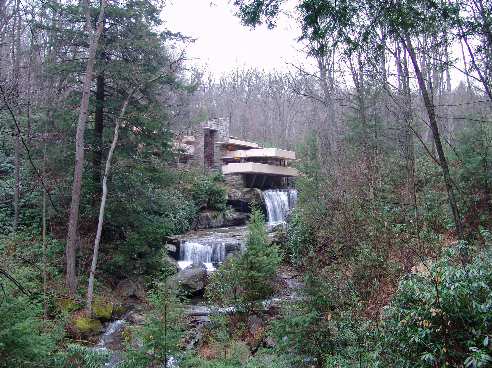

A STUDY IN FORM & PLACE

Fallingwater
Mill Run, Pennsylvania · Designed 1935
Photo: Lykantrop, via Wikimedia Commons · Free useTHE ARCHITECT QUIZ
Who designed
this building?
Look at the terraces, the materials, and the relationship to nature. Chose the correct architect that designed this building.
One question. A closer look at architecture.
What to notice in this example
Why Fallingwater points to Wright
These are clues from specific buildings; an architect’s work can vary across a career.
Learn about this comparison building ↗The clues: organic architecture
Frank Lloyd Wright designed Fallingwater to connect the house with its natural setting.
- Cantilevered terraces: projecting concrete platforms emphasize long, horizontal lines.
- Stone and landscape: stone walls echo the surrounding rock formations.
- Water beneath the house: building over the waterfall makes nature part of the experience.
Remember: Wright → organic architecture → harmony with nature.
Explore the story at Fallingwater ↗